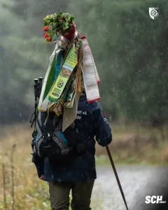
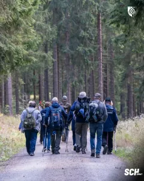
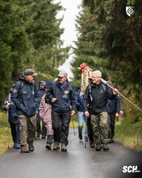
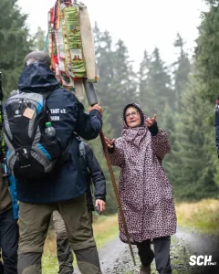
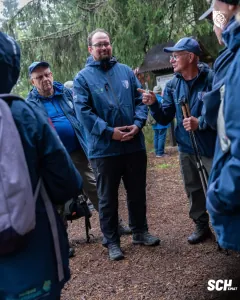
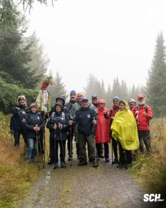
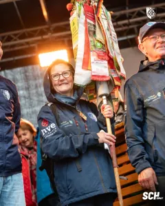
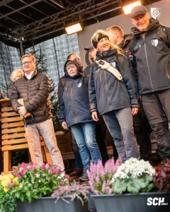

Unsere Wandergruppe bringt den Wimpel nach Oberwiesenthal
Als unsere Wanderfreunde am 24. September das Festgelände in Oberwiesenthal erreichten, lag eine lange gemeinsame Reise hinter ihnen. Seit Juni hatten sie den Wandertagswimpel aus dem Eichsfeld ins Erzgebirge getragen. Nun wurden sie mit Applaus empfangen. Für unsere Wandersektion war diese Ankunft ein bewegender Abschluss nach Monaten der Vorbereitung und vielen gemeinsam zurückgelegten Kilometern.
Aufgebrochen mit einer besonderen Verantwortung
Begonnen hatte der Weg am 15. Juni auf dem Heiligenstädter Marktplatz. Rund 20 Etappen führten bis zum Ziel. Zur etwa 15 Personen umfassenden Kerngruppe gehörten vor allem Wanderfreunde unseres Vereins. Manfred Weinrich, unser Leiter der Breitensportabteilung, begleitete das Vorhaben von der Planung bis zur Ankunft und war über die gesamte Reise hinweg ein wichtiger Ansprechpartner.
Viele Wege und neue Freundschaften
Wie viel diese Zeit den Beteiligten bedeutete, beschrieb unsere Wanderabteilung schon vor der letzten Etappe. Unterwegs waren neue Freundschaften entstanden. Manche hatten Strecken bewältigt, die sie sich zuvor nicht zugetraut hätten. Andere fanden in der Gruppe den Zuspruch, den es an einem anstrengenden Tag manchmal braucht. Gerade darin liegt etwas, das unseren Verein ausmacht: Menschen nehmen sich Zeit füreinander, teilen ein Interesse und erleben gemeinsam Dinge, die allein vielleicht nicht möglich gewesen wären.
Begegnungen, die in Erinnerung bleiben
Zu den besonderen Stationen gehörte Mödlareuth. Der Besuch des einst geteilten Dorfes und der anschließende Weg zum Dreifreistaatenstein gaben der Wanderung auch einen nachdenklichen Moment. Später begleiteten ein Kamerateam und ein Reporter des MDR unsere Gruppe auf dem Abschnitt vom Auersberg nach Johanngeorgenstadt. So unterschiedlich diese Tage waren, sie gehören nun zu den Geschichten dieser Reise.
Die letzten Kilometer verlangten noch einmal alles
Nach einer sonnigen vorletzten Etappe änderte sich das Wetter zum Finale deutlich. Auf dem Weg von Rittersgrün nach Oberwiesenthal mussten unsere Wanderfreunde Starkregen und Sturm trotzen. Die Stimmung blieb dennoch gut. Auf dem letzten Abschnitt schloss sich unser Präsident Dr. Thadäus König an. Später kam Bürgermeister Thomas Spielmann hinzu. Gemeinsam erreichte die Gruppe das Festgelände.
Der Wimpel ist übergeben, die Erinnerungen bleiben
Am Samstag folgte die offizielle Übergabe beim Festumzug. Rund 35 weitere Mitreisende aus dem Eichsfeld waren mit einem vom Naturpark organisierten Bus angereist. Sie begleiteten den Abschluss im Umzug oder am Wegesrand.
Danke für euren Einsatz
Wir danken allen, die diese Wimpelwanderung vorbereitet, begleitet und unterstützt haben. Unser besonderer Dank gilt unserem Abteilungsleiter Breitensport Manfred Weinrich für seinen großen Einsatz sowie unseren Wanderfreundinnen und Wanderfreunden, die unseren SCH und das Eichsfeld auf diesem langen Weg vertreten haben. Hinter einer solchen Reise stehen Zeit, Verlässlichkeit und viel ehrenamtliche Arbeit. Darauf können wir als Verein stolz sein. Und wir freuen uns auf die Erzählungen, die bei den kommenden gemeinsamen Wanderungen noch einmal lebendig werden.
📸 Heilbad Heiligenstadt erleben








Quelle: www.sc1911-heiligenstadt.de · Stand 22.10.2026